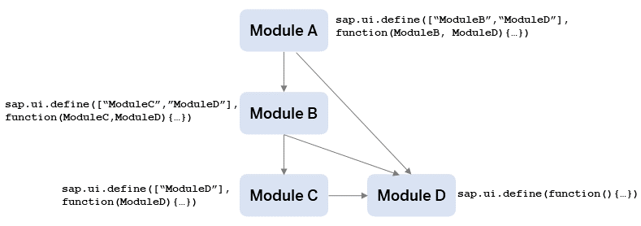

These best practices are especially important when you switch from the synchronous variant of the SAPUI5 module loader to the asynchronous variant. Patterns that may have worked in synchronous module loading may lead to applications that can't start in asynchronous module loading.
Use the async configuration parameter to enable asynchronous module loading via the bootstrap. For more information,
see Standard Variant for Bootstrapping.
Every SAPUI5 module file
must contain exactly one unnamed module definition on the top level: the
sap.ui.define call. Also, to avoid side-effects, all
module-related functions must be defined within the callback function.
Example: The following two modules are unnamed. They only
contain one top-level sap.ui.define and can be addressed with the
respective unique module name:
myLib/MyModuleA.js
sap.ui.define(function(){
...
});
...For troubleshooting information with regard to loading your module, see Why is my Module Not Loading?.
A module must always be addressed with the unique module name. The module name is case-sensitive.
myLib/MyModuleB.js
sap.ui.define(["myLib/MyModuleA"], function(MyModuleA){
...
});For troubleshooting information with regard to addressing modules, see What is wrong with the way I am addressing the modules?.
Historically, types that are defined within a library.js could be required as if they were modules of their own
(i.e. as "pseudo modules"). This behavior is deprecated, and the corresponding library module should be required
instead. The example below showcases three scenarios how types might be used. You can find the corresponding module for each API,
enum, and control in the API Reference, e.g. sap.m.ButtonType and sap.ui.model.FilterType.
enum types included in a library.js
e.g. you can use sap.m.ButtonType by requiring the sap/m/library module since it's
documented as "Module: sap/m/library" in the API Reference. The type can then be accessed via the library's module
export.
enum types provided as a standalone module
e.g. you should require sap/ui/model/FilterType directly since it's documented as "Module:
sap/ui/model/FilterType"
Instances of DataType included in a library.js
e.g. you can use sap.ui.core.CSSSize by first requiring the sap/ui/core/library
module as documented in the API Reference. The DataType itself can then be accessed via the static DataType.getType(...)
API as shown below.
Accessing the DataType instance via the library's module export is also deprecated.
Example:
sap.ui.require([
"sap/m/library", // enum sap.m.ButtonType (Module: sap/m/library)
"sap/ui/model/FilterType", // enum sap.ui.model.FilterType (Module: sap/ui/model/FilterType)
"sap/ui/base/DataType", // DataType facade (Module: sap/ui/base/DataType)
"sap/ui/core/library" // includes the DataType "sap.ui.core.CSSSize" (Module: sap/ui/core/library)
], (sapMLib, FilterType, DataType /*, sapUiCoreLib*/) => {
const { ButtonType } = sapMLib;
mySapMButton.setType(ButtonType.Emphasized);
myListBinding.filter(myFilter, FilterType.Application);
const oCSSSize = DataType.getType("sap.ui.core.CSSSize");
oCSSSize.isValid("20px") // true
});Example for migrating several legacy aspects:
| Legacy Code | Best Practice |
|---|---|
sap.ui.define([
"sap/m/SortOrder", // Outdated pseudo module
"sap/ui/model/FilterType", // standalone module
"sap/ui/layout" // target use: SimpleForm
], (SortOrder, FilterType, sapUiLayoutLib) => {
"use strict"
var SimpleForm = sapUiLayoutLib.form.SimpleForm; // access to Control via globals
// ...
// access to Control via globals
sap.m.MessageBox.show(/*...*/);
// ...
}); |
sap.ui.define([
"sap/m/library", // "SortOrder" is contained in the sap/m/library.js module
"sap/ui/model/FilterType", // remains the same
"sap/ui/layout/form/SimpleForm" // imported as a module, no access to globals needed
], (sapMLib, FilterType, SimpleForm) => {
"use strict";
const { SortOrder } = sapMLib;
// ...
// lazily require the sap/m/MessageBox on demand
sap.ui.require([
"sap/m/MessageBox"
], (MessageBox) => {
MessageBox.show(/*...*/);
});
// ...
}); |
The entry point of an SAPUI5 application is often a module that is used to instantiate a SAPUI5 component. This central module is considered as single node of a graph and all dependent modules as well as their dependencies are nodes that must be connected by directed edges: the graph must fulfill the requirements of a directed acyclic graph (DAG).
Example: All modules are evaluated in a clearly defined order. The evaluation starts with module D, then module C and module B, and ends with module A.
For troubleshooting information with regard to the project structure, see How can I remove project structures with cyclic dependencies?.